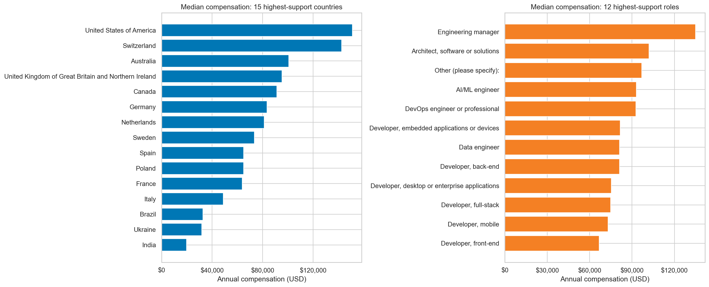
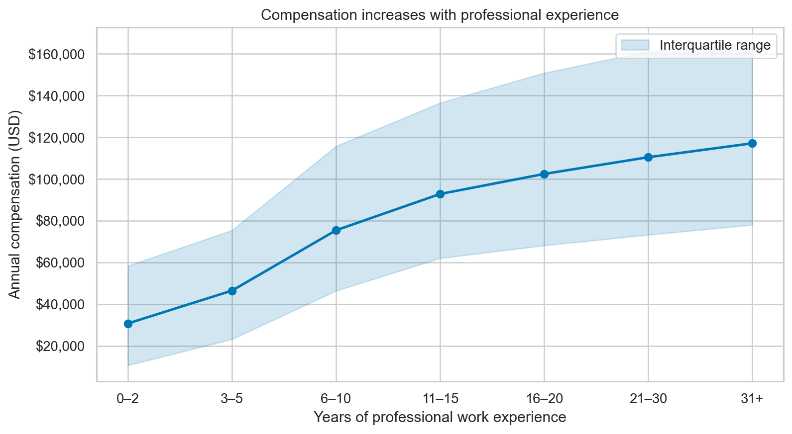
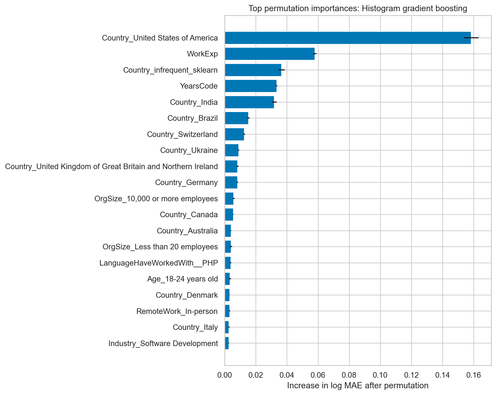

Developer compensation discussions often focus on the newest language or framework. But does an individual technology really tell us much about pay? I analyzed the 2025 Stack Overflow Developer Survey to find out.
I focused on 19,025 professional developers who were employed or self-employed and reported annual compensation between USD 1,000 and USD 1 million. The sample is global, so the results describe survey respondents—not every developer or a universal salary market.
{kind=link}

Experience matters, but location changes the scale
Median compensation rose steadily with professional experience: from USD 30,764 at 0–2 years to USD 75,410 at 6–10 years and USD 117,082 at 31 or more years. Geography produced even larger gaps. Among the 15 countries with the most usable responses, medians ranged from USD 19,761 in India to USD 151,000 in the United States. Engineering managers had the highest median among the 12 most common roles at USD 135,000.
{kind=link}

These comparisons are descriptive. They do not adjust for purchasing power, industry mix, or local costs of living.
Technologies are signals, not magic salary buttons
A statistical model estimated technology associations while accounting for observed differences in career and workplace context. Swift, ClickHouse, Homebrew, and Phoenix had some of the largest positive coefficients. Laravel, IBM DB2, Django, and Dart appeared at the negative end.
Salary is predictable—only up to a point
As a baseline, simply predicting the training-set median produced a typical error factor of 2.09. To check that the result did not depend on one algorithm, I tested two nonlinear approaches: Extra Trees averages many randomized trees, while gradient boosting builds trees sequentially to correct earlier mistakes. I also included linear Ridge regression, and evaluated all three model families using the same five-fold validation process.
Gradient boosting performed best. On held-out responses, its log MAE was 0.422, which corresponds to a typical error factor of about 1.53. Its log-scale R² was 0.564.
Permutation importance reinforced the descriptive story: country and experience mattered far more than any single technology.
For three hypothetical US software-industry profiles, the model predicted approximately USD 102,000 for an early-career full-stack developer, USD 195,000 for an experienced back-end contributor, and USD 214,000 for an experienced engineering manager. These are illustrations of model behavior—not salary quotes or causal promotion effects.
The clearest lesson is that developer compensation reflects context and career stage more than one tool on a résumé. Technology matters, but it is only one piece of a much larger labor-market story.
{kind=link}

Read the reproducible notebook, model comparisons, and supporting results in the GitHub repository.